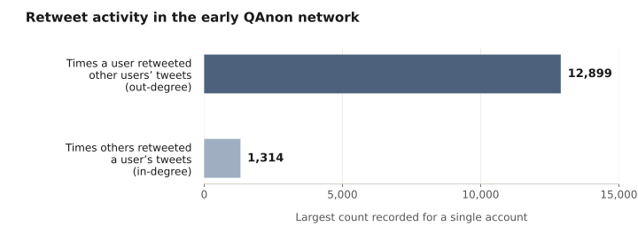
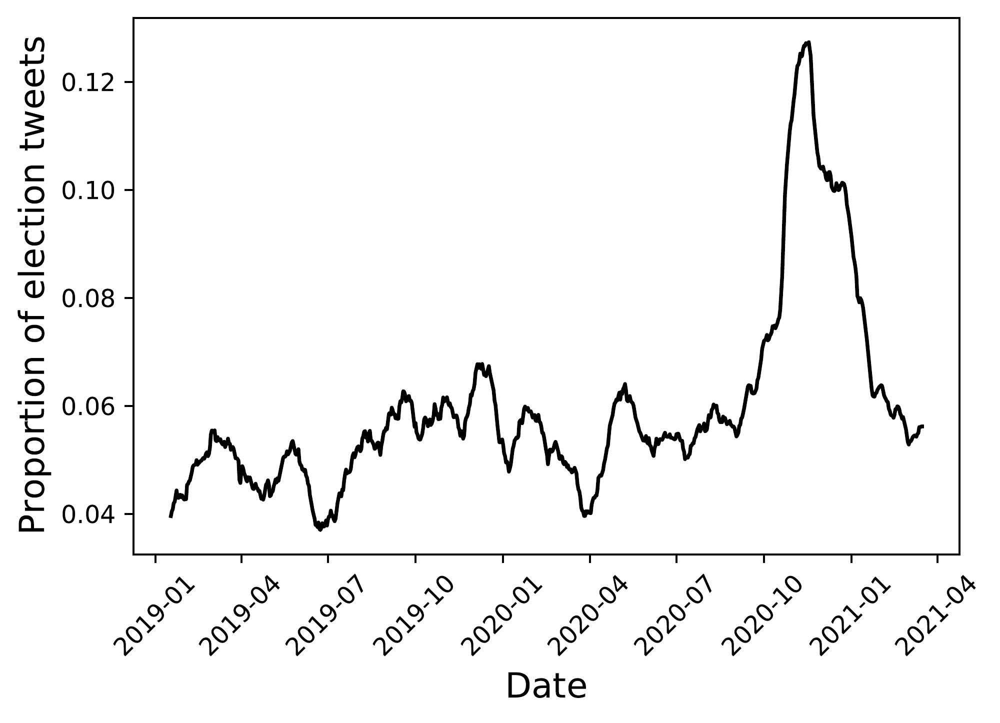

The Promise and Pitfalls of Hashtag Activism
Selected Studies · 2021–2022
Priniski, J. H., McClay, M., & Holyoak, K. J. (2021). Rise of QAnon: A mental model of good and evil stews in an echochamber. Proceedings of the Cognitive Science Society.
Priniski, J. H., et al. (2021). Mapping moral valence of tweets following the killing of George Floyd. Proceedings of the 6th International Workshop on Social Sensing.
Adams et al. (2022). Knowledge graphs of the QAnon Twitter network. IEEE International Conference on Big Data.
Connecting Personal Narratives to Collective Action
Hashtags facilitate collective conversations among spatially fragmented groups. By connecting posts around shared narrative content and communicative purpose, they link personal narratives into emerging collective narratives. Movements such as #MeToo and #BlackLivesMatter show how these dynamics can make overlooked experiences visible, build shared knowledge, and support collective organizing.
Yet the scale of an online movement does not by itself establish lasting changes to the social structures it challenges. The same networks can concentrate narrative power, amplify conspiratorial frames, and fragment discussion. My research combines network science and natural language processing to understand this tension: how online communication expands people’s ability to shape collective narratives, and how that agency can be constrained.
Shared Moral Narratives Can Support Solidarity and Organizing
Following the killing of George Floyd, #BlackLivesMatter brought documentation of police violence and personal accounts of racial injustice into a collective conversation. With collaborators at UCLA and USC, I examined the moral evaluations expressed in 36,282 tweets associated with the Los Angeles area between February and August 2020 (Priniski et al., 2021).
Using FrameAxis and the extended Moral Foundations Dictionary, we mapped tweets into a moral embedding space. The most prominent moral concerns centered on police authority, harm, and injustice, alongside positive expressions of loyalty and community.

A collective narrative combines evaluations of institutions with expressions of shared identity
Language about violence, discrimination, and unfairness expressed critiques of policing. Positive language about community, togetherness, and collective practices revealed the shared identities expressed alongside those critiques.
Exploratory clustering distinguished discussion of local organizing, general support for the movement, and hashtag promotion. These patterns reveal different ways people contributed to the collective conversation.
How Centralized Information Flow Limits Narrative Agency
To understand how networked narratives can instead reinforce conspiratorial thinking, I studied the early QAnon Twitter network. We analyzed more than 800,000 tweets from over 100,000 users collected in the summer of 2018, combining retweet network analysis with community-specific topic models (Priniski, McClay, & Holyoak, 2021).
Most users disseminated rather than produced information, circulating content from a small set of influential accounts. Across communities, topic models revealed a recurring Good-versus-Evil frame that linked political events to a wider narrative of hidden threats, militarization, and distrust.

This pattern illustrates a central pitfall of networked communication: broad participation can coexist with a narrow set of narrative sources. Many people may share a narrative while relatively few shape the information and frames around which that sharing occurs.
Shared Hashtags Can Connect Different Conversations
A follow-up collaboration extended this analysis by collecting tweet histories from users who had discussed QAnon in 2018. We combined topic modeling, sentiment analysis, and community detection in a knowledge graph, relating what people discussed to their interactions and the events unfolding around them (Adams et al., 2022).
We asked how major offline events related to shifts in online discussion. The largest topic identified by our initial model included the terms “the election,” “voter fraud,” and “to vote.” Tracking this topic over time allowed us to examine whether the narrative content identified by the model corresponded to the real-world event it described.
For each day from January 2019 to April 2021, we calculated the proportion of sampled tweets assigned to the election topic and averaged those proportions over 30-day windows. Measuring the topic’s share of discussion captured its relative prominence as overall posting activity changed. That share increased sharply near the 2020 U.S. presidential election, also providing a check that the model identified an interpretable topic with a meaningful temporal pattern.

Tweet volume shifted around George Floyd’s killing, the 2020 election, and January 6, but showed no discernible change after 8chan’s removal. Major offline events drew attention across the network, while smaller communities retained distinct topics of discussion.
These findings connect offline events to online attention. A central question for hashtag activism is when that attention translates into changes in behavior, organizing, or institutions.
We also developed KG-labeled topic modeling, using social and temporal context to identify topics that short tweets left ambiguous.
From Online Visibility to Narrative Agency
The promise of hashtag activism lies in connecting individual experiences to shared knowledge and coordinated action. Its pitfalls arise when narrative visibility grows without giving participants durable influence over the narratives and institutions shaping their lives. Political astroturfing exploits these dynamics by fabricating the appearance of grassroots support and injecting distorted portrayals into collective discussions.
My narrative agency framework connects these concerns: who creates and frames narrative information, how people integrate it into their understanding, and how their contributions shape a group’s collective narrative. AI agents add a new dimension because they can generate and personalize the language entering those conversations.
This work motivates my controlled network experiments and human–AI group communication research, where I test how communication networks and engineered AI signals shape shared language, personal narratives, and perceptions of what others believe.